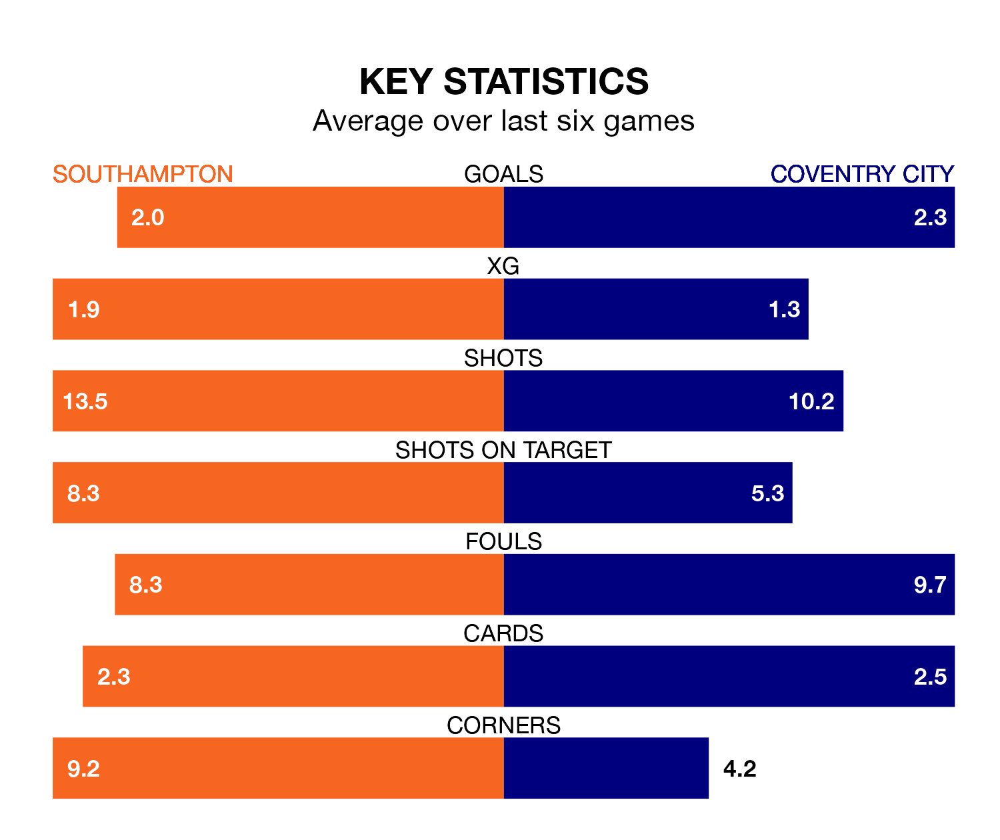

Southampton are heavy favourites to keep all three points at home in Tuesday's late kick-off against Coventry City.
The Saints, who sit fourth in EFL Championship with 39 games played, are priced at 1.6 to seal victory at St. Mary's.
Sitting three places and 12 points behind them in the table, Coventry are 4.3 to win with *Betting Company*, while the draw is at 4.2.
With 76 goals in 39 games so far this season, Southampton are the league's joint-third-highest scorers with 1.9 goals per game. And they are conceding at an average rate, letting in 51 goals at a rate of 1.3 per game.
Coventry are also above average scorers, with 1.6 goals per game, compared to a league average of 1.3. They have conceded 1.2 goals per game.
In Adam Armstrong, the Saints have one of the league's most on-form strikers so far this season. He has notched 20 goals in 39 appearances, to sit second in the scoring charts.
His goal rate of one every 162 minutes is slightly quicker than that of Haji Wright, City's top scorer with a goal every 165 minutes, and a total of 15 goals in 38 games.
The home team are in mixed form in EFL Championship, with two wins and two draws from their last six games.
With four wins and two losses over that period, the Sky Blues' form is better – they have taken 12 points from 18, compared to Southampton's eight.
Southampton's last match was on Saturday, a 0-0 draw against Blackburn Rovers.
Coventry beat Leeds United 2-1 last time out, also on Saturday, with Ellis Simms and Wright on the scoresheet.
Tuesday's match will be refereed by James Linington, who has taken charge of 17 EFL Championship games so far this season, issuing one red card and booking 83 players. He has awarded five penalties.
The last Southampton game Linington refereed was a 2-1 home win against Plymouth Argyle on December 29. He is yet to oversee a match featuring Coventry this season.
Updated: 11:20 (UTC), 09/04/24